Целью данной работы является приобретение практических навыков по установке и конфигурированию SMTP-сервера.
На виртуальной машине server войдём под нашим пользователем и откроем терминал. Перейдём в режим суперпользователя и установим необходимые для работы пакеты (рис. @fig-1, @fig-2):
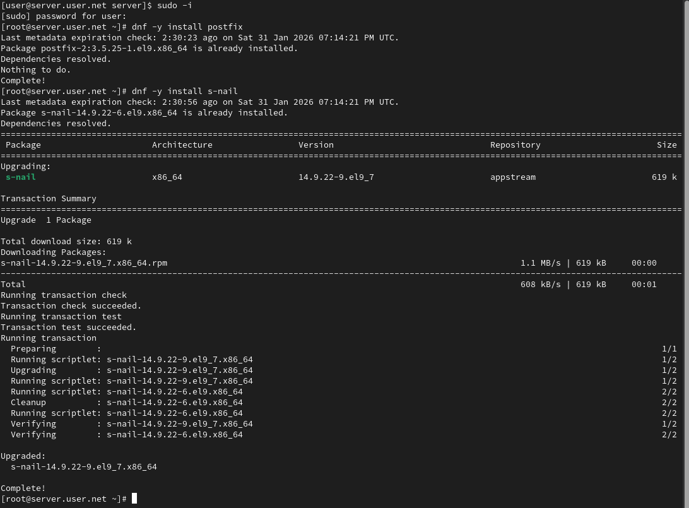
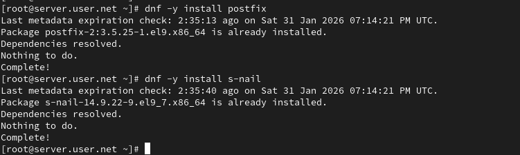
Сконфигурируем межсетевой экран, разрешив работать службе протокола SMTP. Восстановим контекст безопасности в SELinux и запустим Postfix (рис. @fig-3):
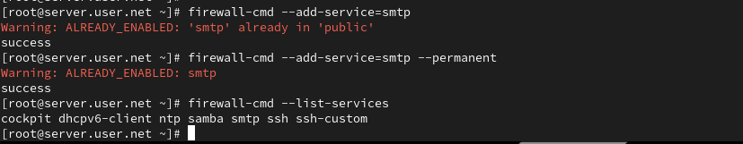
Просмотрим и изменим параметры Postfix, заменив значение параметра myorigin на значение параметра mydomain (рис. @fig-4):
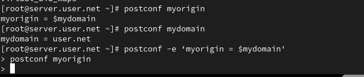
Проверим корректность конфигурационного файла и перезагрузим Postfix (рис. @fig-5):
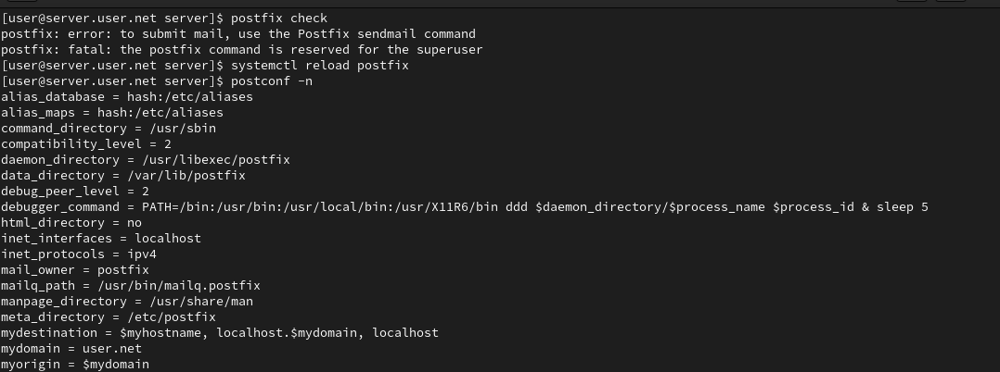
На сервере под учётной записью пользователя отправим себе письмо, используя утилиту mail (рис. @fig-6):
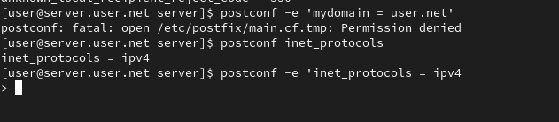
Запустим мониторинг работы почтовой службы и посмотрим, что произошло с нашим сообщением (рис. @fig-7):
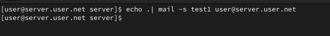
На виртуальной машине client установим необходимые для работы пакеты (рис. @fig-8, @fig-9):
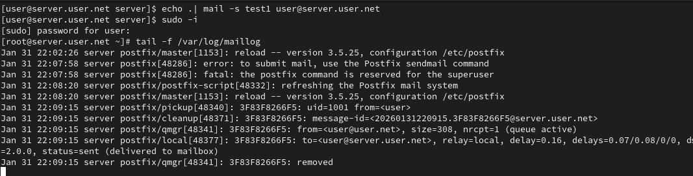
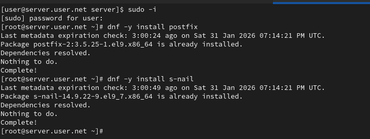
Настроим Postfix на клиенте и отправим тестовое письмо (рис. @fig-10):
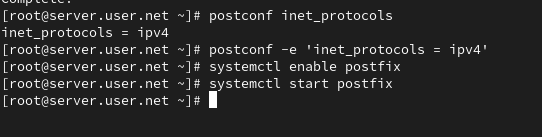
На сервере настроим параметры сетевых интерфейсов и перезапустим Postfix (рис. @fig-11):
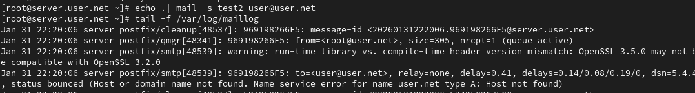
С клиента отправим письмо на свой доменный адрес и просмотрим очередь сообщений (рис. @fig-12):
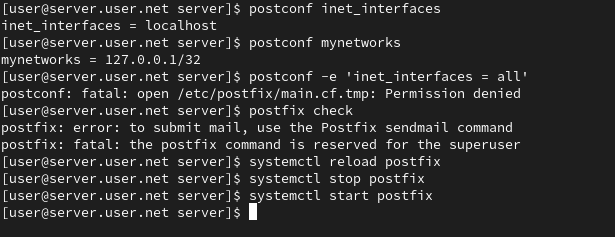
Пропишем MX-запись в файлах прямой и обратной DNS-зон (рис. @fig-13):
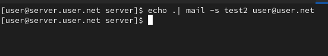
Восстановим контекст безопасности, перезапустим DNS и отправим сообщения из очереди (рис. @fig-14):
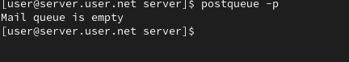
Настроим скрипты для автоматического развёртывания и добавим записи в Vagrantfile (рис. @fig-15):
В ходе выполнения лабораторной работы были получены навыки по установке и конфигурированию SMTP-сервера.
В каком каталоге и в каком файле следует смотреть
конфигурацию Postfix?
Конфигурация Postfix обычно хранится в файле main.cf, в каталоге
/etc/postfix/. Таким образом, путь к файлу конфигурации будет
/etc/postfix/main.cf.
Каким образом можно проверить корректность синтаксиса в
конфигурационном файле Postfix?
Для проверки корректности синтаксиса в конфигурационном файле Postfix
можно использовать команду postfix check.
В каких параметрах конфигурации Postfix требуется внести
изменения для настройки возможности отправки писем на доменные
адреса?
Для настройки отправки писем на доменные адреса, нужно изменить
параметры myhostname и mydomain в файле main.cf: